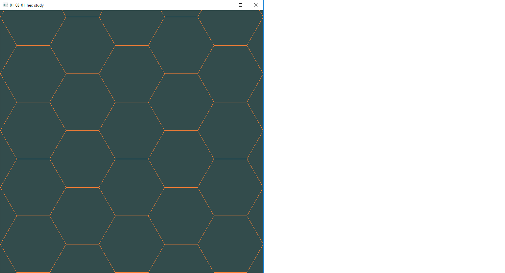

file://eapl.staff/users/Files/kheaser/Desktop/LWD5e_materials/ch04/finished%20exercises/ex4-5_index.html
How does this differ with?
Rather than having to constantly push and pull from github after each change, open locally to file:///c: and navigate to the work in progress.
For a network location: file://hostname/path/to/the%20file.txt Or for a local file, the hostname is omitted, but the slash is not (note the third slash): file:///c:/path/to/the%20file.txt
When you see “%20,” it represents a space in an encoded URL, for example,http://www.example.com/products%20and%20services.html.
I don't think it's immediately obvious how to make a new folder in the GitHub repository from the web browser interface. Fortunately, it's super easy. Actually, it's just the same as creating a new file. The only caveat is that you can't create an empty folder. So you are going to have to make a file to go in your new directory, even if you subsequently delete this file.
Alt + Print Screen To take a quick screenshot of the active window, use the keyboard shortcut Alt + PrtScn . This will copy your currently active window to the clipboard. You will need to paste the screen shot into an image editor and then save it to the desired format.
The Black Goose Bistro offers casual lunch and dinner fare in a relaxed atmosphere. The menu changes regularly to highlight the freshest local ingredients.
You have fun. We'll handle the cooking. Black Goose Catering can handle events from snacks for a meetup to elegant corporate fundraisers.
Seekonk, Massachusetts; Monday through Thursday 11am to 9pm; Friday and Saturday, 11am to midnight